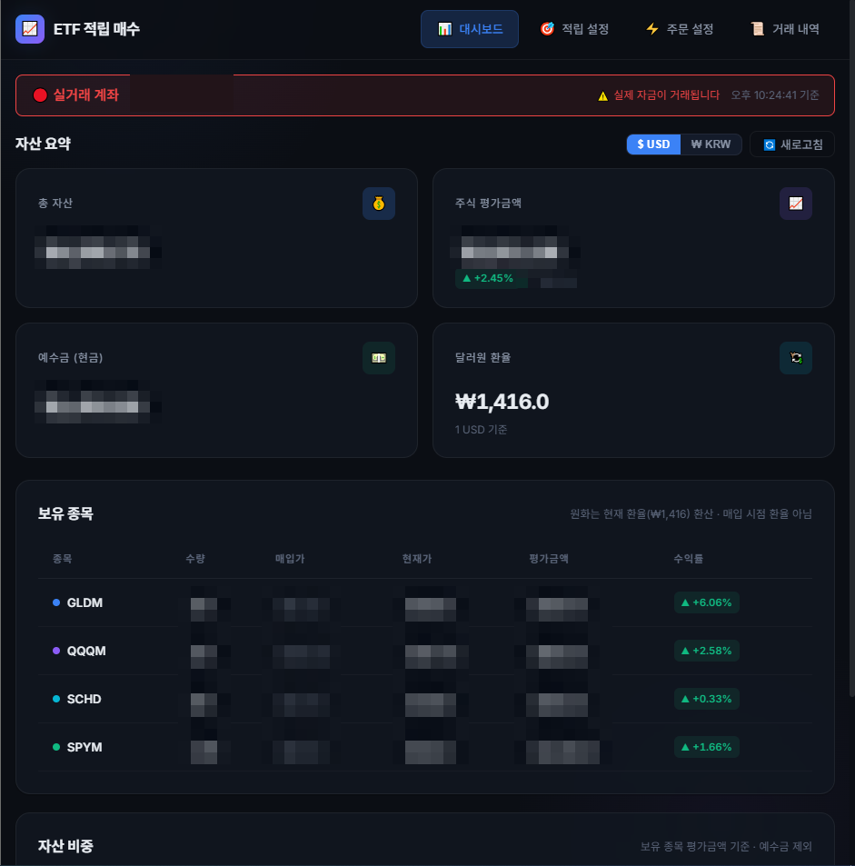
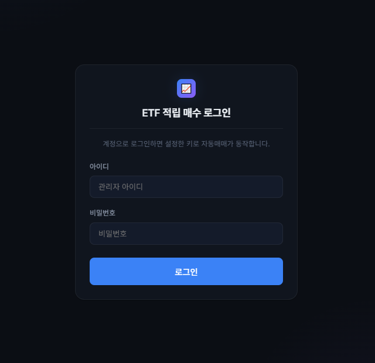
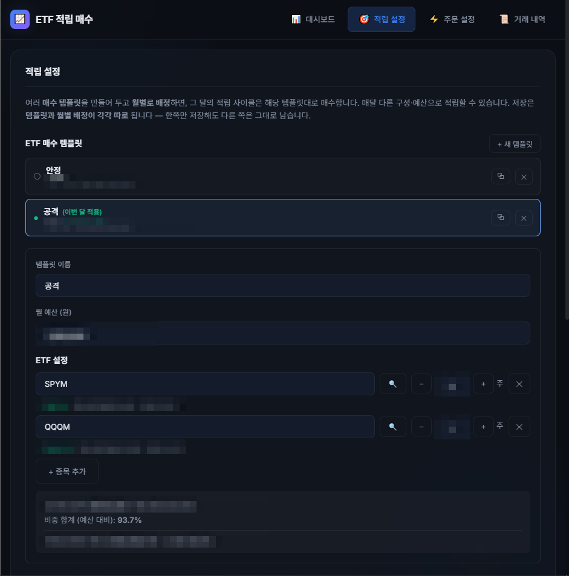
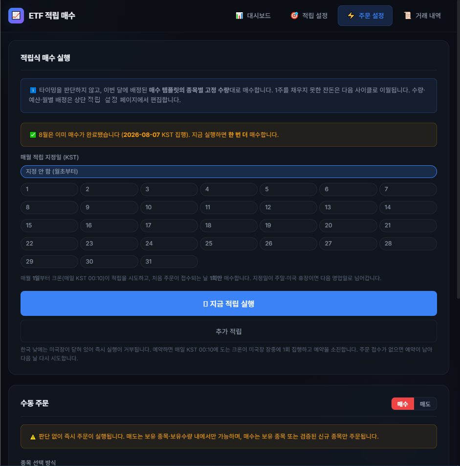
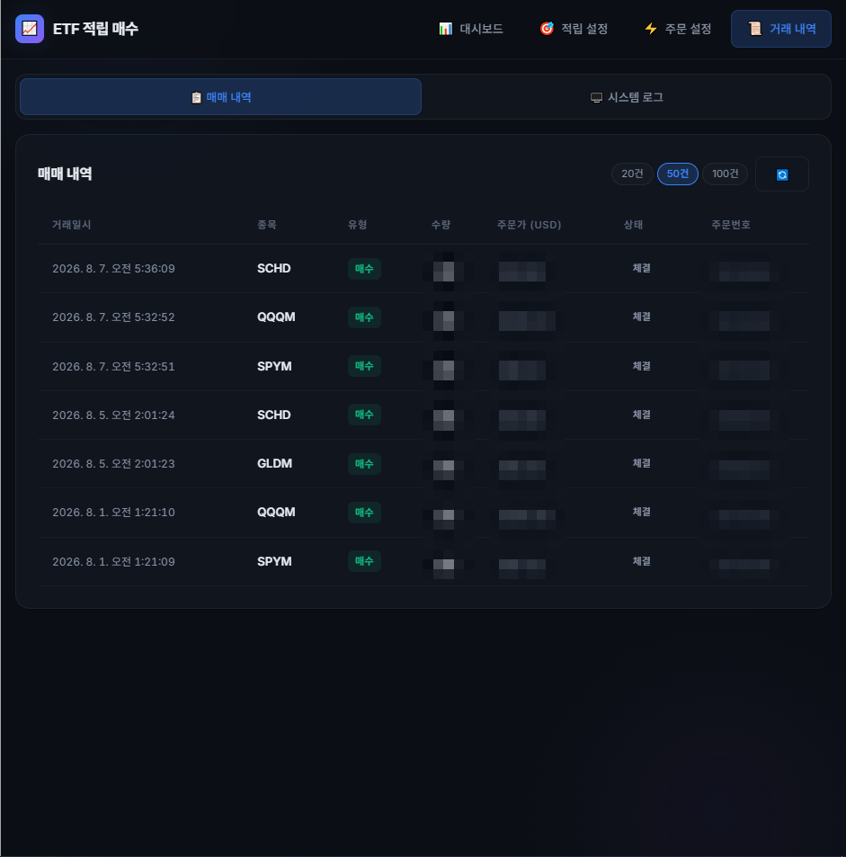
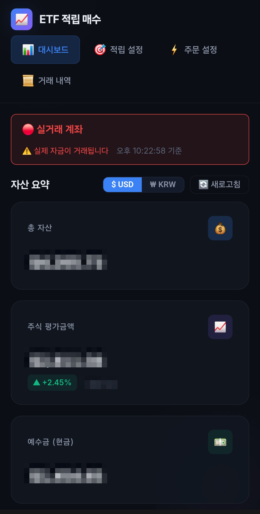

개인 프로젝트
매달 정해둔 설정으로 해외 주식을 자동으로 매수합니다.
기술 스택

화면 둘러보기




폰에서도 그대로

AI로 '언제 살지'를 계산하는 기능을 만들었다가, 백테스트로 확인하고 전부 지웠습니다.
| 전략 | 단순 적립 대비 |
|---|---|
| 완벽한 타이밍매달 장중 최저가에 매수 — 사후에만 알 수 있는 값 | 연 +0.4%p |
| 추세추종 (SMA200)200일 이동평균 위일 때만 매수 | 연 −2.0 ~ −2.4% |
| 밸류애버리징목표 대비 부족분만 매수, 나머지는 현금 대기 | 최종 자산 46~50% |
도달할 수 없는 완벽한 타이밍조차 연 +0.4%p에 그쳤고, 실제로 구현 가능한 규칙은 단순 적립에 졌습니다. 타이밍을 맞히는 일에는 천장이 있습니다.
- AI 타이밍 판단 · 퀀트 지표 · 리밸런싱+ '언제'가 아닌 '무엇을'에 집중해 매수합니다
어떻게 돌아가나
GitHub Actions의 cron이 서버를 호출합니다. 앱 안에 타이머를 두지 않아, 서버가 잠들어도 놓치지 않습니다.
Render에 올린 .NET 서버가 한국투자증권 REST API로, 설정해 둔 종목·수량대로 매수합니다.
체결 내역을 PostgreSQL에 저장하고, 결과를 이메일로 보고합니다.